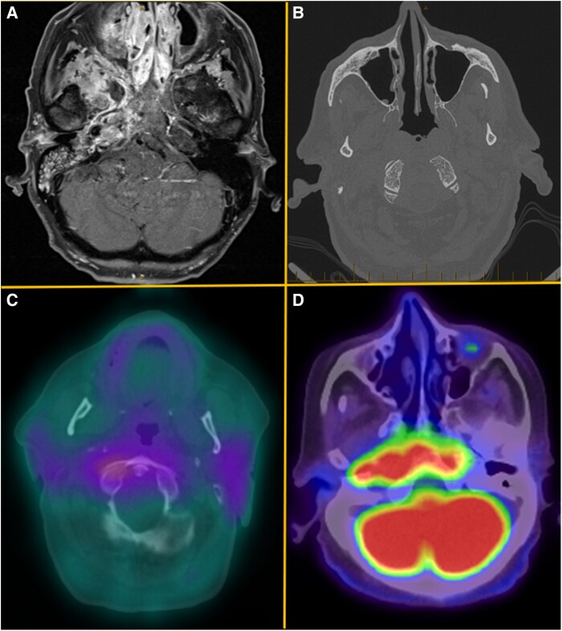
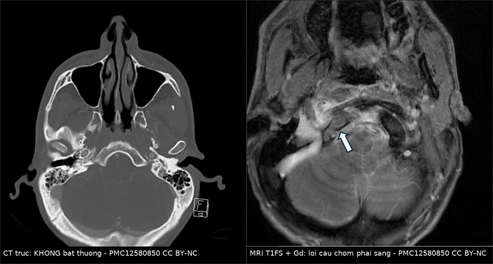
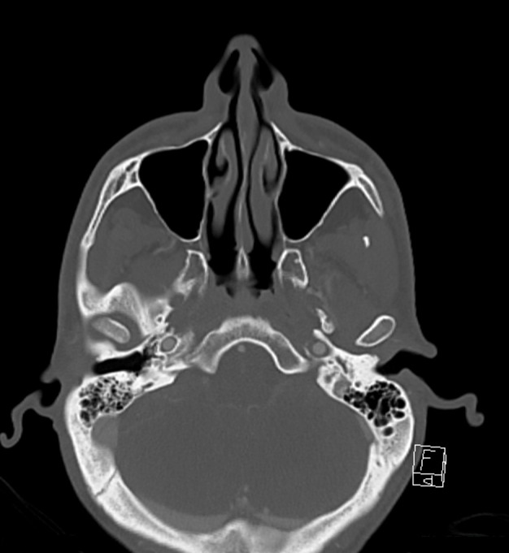
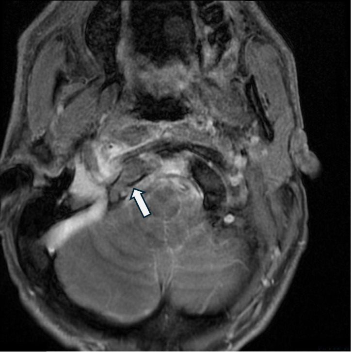
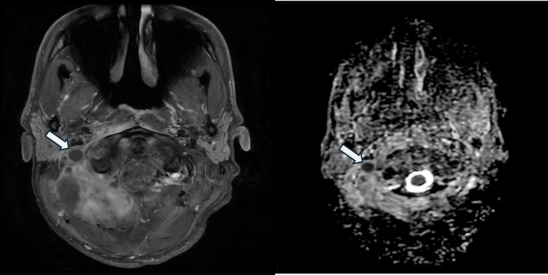

253 — Viêm xương nền sọ GIỮA không do tai: clivus, lồi cầu & cạm bẫy "CT bình thường" / Central skull base osteomyelitis (CSBO)
Tags: pattern:viem-xuong-nen-so pattern:mo-xuong pattern:liet-day-than-kinh-so vung:nen-so vung:clivus vung:xuong-cham score:CN-palsy protocol:MRI-T1-fat-sat protocol:CT-xuong-thai-duong protocol:PET-FDG
Mức chắc chắn (certainty): tổng hợp y văn (literature synthesis) — số liệu từ đoàn hệ 22 ca Queensland (Eustace MB et al., Open Forum Infect Dis 2024, PMC11500440), đoàn hệ 22 ca Hàn Quốc (Jung JH et al., Otolaryngol Head Neck Surg 2026, PMC13418054), tổng quan hệ thống 25 bài/44 bệnh nhân (PMC12064298), bộ điểm theo dõi CSBO (Upreti G et al., 2023, PMC10646027), cộng 2 ca nguyên văn (verbatim case) CC BY-NC 4.0 (PMC12580850) và CC BY 4.0 (PMC12282796).
1. Tổng quan bệnh học – cơ chế hình ảnh: vì sao CT thường "sạch" mà MRI đã dương tính
- Định nghĩa: viêm xương nền sọ giữa (central skull base osteomyelitis — CSBO) là nhiễm trùng xương clivus, xương bướm và/hoặc xương chẩm/lồi cầu, không có ổ nhiễm tai–xương chũm khởi nguồn. Khác hẳn viêm xương nền sọ bên do viêm tai ngoài ác tính (bài 233), CSBO không có mô hạt ống tai, người bệnh không nhất thiết đái tháo đường, và tác nhân thường là tụ cầu vàng chứ không chỉ Pseudomonas.
- Đường lan quyết định ổ nhiễm ở đâu:
- Xoang bướm viêm mạn → xương bướm → clivus (đường trực tiếp).
- Răng hàm trên/hàm dưới (ổ răng, viêm quanh răng) → đám rối tĩnh mạch chân bướm (pterygoid venous plexus) — van tĩnh mạch này không có giá trị một chiều, nên nhiễm từ vùng hàm mặt đi ngược lên nền sọ; ca nguyên văn 2026 (PMC13145246) khởi đầu bằng viêm cơ chân bướm phải trước khi ăn vào nền sọ.
- Đường máu từ ổ nhiễm xa (nhọt da, viêm phổi, catheter) — ca PMC12580850: MRSA từ nhọt tay–chân.
- Từ nền sọ bên (do tai) lan vào trong: thể chuyển tiếp, tiên lượng riêng.
- TẠI SAO MRI dương tính trước CT — vật lý tủy xương: clivus và lồi cầu ở người lớn chứa tủy mỡ, nên T1W sáng hơn cơ và sáng hơn đĩa đệm. Khi viêm xương, mỡ tủy bị thay bằng dịch phù, mủ, tế bào viêm (nhiều nước, ít proton mỡ) → T1W tối, T2W/STIR sáng, ngấm gadolinium. Đây là thay đổi trong tủy xương, xảy ra trước khi vỏ xương bị phá.
- TẠI SAO CT có thể bình thường: cửa sổ xương chỉ thấy mòn vỏ xương khi đã mất khoáng đáng kể (thực nghiệm cần mất khoảng 30–50% khoáng chất mới thấy trên CT); trong 2–4 tuần đầu, tổn thương khu trú trong tủy xương → CT âm tính giả. Ca PMC12580850 là bằng chứng nguyên văn: CT cổ bình thường, MRI cùng ngày phát hiện viêm xương lồi cầu chẩm phải.
- TẠI SAO theo dõi bằng CRP/ESR chứ không bằng phim: hình ảnh tủy xương tồn tại nhiều tháng sau khi hết nhiễm; CRP giảm nhanh (nửa đời ngắn, men gan IL-6), ESR giảm chậm. Vì vậy "phim còn xấu" không đồng nghĩa "còn nhiễm".
- TẠI SAO FDG-PET hữu ích: bạch cầu trung tính và đại thực bào trong ổ viêm tăng đường phân → tích tụ FDG; nhưng u cũng dương tính, nên PET chỉ dùng để theo dõi đáp ứng sau khi đã có chẩn đoán, hoặc phân biệt tồn dư.
Ngưỡng định lượng trụ cột (đọc nhanh)
| Chỉ số | Số liệu | Nguồn |
|---|---|---|
| Tuổi trung vị | 73 (Queensland); 63–87 (loạt 7 ca Mỹ) | PMC11500440 |
| Nam giới | 73% | PMC11500440 |
| Đái tháo đường | 68,2% (Hàn Quốc); là bệnh nền hay gặp nhất (Queensland, CCI trung vị 5) | PMC13418054, PMC11500440 |
| Đau đầu khi nhập viện | 95% (tổng quan 44 ca); 63,6% (Hàn Quốc) | PMC12064298, PMC13418054 |
| Liệt dây thần kinh sọ | 82% (tổng quan 44 ca) | PMC12064298 |
| ESR lúc nhập viện | trung vị 65 mm/giờ (IQR 67) | PMC11500440 |
| Bạch cầu | trung vị 11,6 × 10⁹/L | PMC11500440 |
| Tác nhân | P. aeruginosa 31,8%, Staphylococcus 27,3% (Queensland); nấm 41%, vi khuẩn 32%, hỗn hợp 23% (Hàn Quốc) | PMC11500440, PMC13418054 |
| Kháng sinh | TM trung vị 42 ngày (IQR 12) → uống trung vị 42 ngày (IQR 109,3) | PMC11500440 |
| Tử vong | 31,8% (Queensland) / 13,6% (Hàn Quốc) | PMC11500440, PMC13418054 |
| Di chứng dài hạn | 45,5% (liệt dây sọ, nghe kém tiếp nhận, đau mặt dai dẳng) | PMC11500440 |
| FDG-PET theo dõi | Se 95,2%, Sp 89,1%, LR+ 8,7, LR− 0,05 | PMC13030614 |
2. Mẫu hình + chẩn đoán phân biệt theo đường lan (Gamut)
Nhóm 1 — từ xoang bướm/xoang sàng sau: viêm xoang mạn, sau phẫu thuật nội soi, sau chấn thương; hình ảnh dày niêm mạc xoang + mất tủy xương bướm/clivus.
Nhóm 2 — từ răng/hàm (odontogenic): ổ răng, viêm quanh răng, sau nhổ răng; viêm cơ chân bướm (pterygoid), viêm mô tế bào khoang nhai — dễ bị đọc thành "viêm mô tế bào đơn thuần" (PMC13145246).
Nhóm 3 — từ vòm họng (giả u): ung thư biểu mô vòm (NPC) xâm lấn nền sọ, u chordoma, chondrosarcoma vùng nhân nền sọ — nhóm này không đáp ứng kháng sinh và là lý do bắt buộc sinh thiết.
Nhóm 4 — từ nền sọ bên (do tai): viêm tai ngoài ác tính lan vào trong (bài 233); có mô hạt ống tai, liệt VII sớm.
Nhóm 5 — do nấm xâm lấn: Aspergillus, Mucorales ở người suy giảm miễn dịch/đái tháo đường kiểm soát kém; hoại tử mạch máu, không ngấm thuốc trung tâm, lan nhanh, khí trong mô mềm.
Nhóm 6 — lao nền sọ: sốt nhẹ kéo dài, viêm màng não nền, tổn thương dạng u hạt, vùng dịch tễ.
Nhóm 7 — bệnh IgG4 nền sọ (kẻ giả danh lớn): dày mô mềm đối xứng, ngấm đồng nhất, tăng IgG4 huyết thanh, đáp ứng corticoid — ca PMC12282796 khởi đầu giống CSBO kèm áp-xe sau hầu, chỉ chẩn đoán đúng nhờ sinh thiết sâu.
Nhóm 8 — di căn/xương tủy (myeloma): nhiều ổ, không có mô mềm viêm lan, không sốt, tiền sử ung thư.
Gợi nhớ SPHENOID: Sinus (xoang bướm), Pterygoid/răng (chân bướm), HIV–immunosuppression (nấm), Ear (nền sọ bên), Neoplasm (NPC/chordoma), Osteoporosis–metastasis/myeloma, IgG4, Diabetes.
3. Bảng so sánh phân biệt (ma trận đối chiếu)

A: MRI T1 sau gadolinium — ngấm mạnh xoang cạnh mũi và nền sọ phải, ăn vào clivus, xương bướm và đỉnh xương đá phải. B: CT trục — bong vỏ xương (decortication) clivus hai bên ở bờ bên và bờ trước. C: gallium-67 — tăng tích tụ lan tới vùng clivus. D: FDG-PET/CT — tích tụ mạnh ăn mòn clivus, lan sang xương đá và lỗ rách/lỗ cảnh. Nguồn: Eustace MB et al., Open Forum Infect Dis 2024, PMC11500440 Fig. 2, CC BY 4.0.| Thực thể | Hình ảnh điển hình | Chốt vào (rule-in) | Chốt loại (rule-out) | Gợi ý xác nhận |
|---|---|---|---|---|
| CSBO do vi khuẩn | MRI: tủy clivus/lồi cầu T1 tối, T2/STIR sáng, ngấm thuốc; mô mềm trước clivus dày; CT có thể bình thường hoặc bong vỏ xương | Đau đầu/đau cổ + CRP–ESR cao + MRI thay tủy xương nền sọ | CT bình thường không loại trừ; tổn thương không ngấm thuốc trung tâm gợi nấm/hoại tử | MRI 1,5–3 T + cấy máu + sinh thiết sâu |
| CSBO do nấm | Hoại tử, không ngấm trung tâm, xâm lấn mạch, lan nhanh, có thể có khí; xoang cạnh mũi bị phá | Suy giảm miễn dịch + không đáp ứng kháng sinh 2 tuần + cấy nấm dương | Cấy nấm âm không loại trừ (chỉ dương ~72% ở nhóm phối hợp kháng nấm) | Sinh thiết + PCR/nhuộm bạc + phối hợp kháng nấm |
| NPC xâm lấn nền sọ | Khối xoang Rosenmüller, lan theo dây thần kinh, hạch cổ, phá xương nền sọ | Khối vòm một bên + hạch cổ + EBV-DNA | Niêm mạc vòm đối xứng, không khối → ít nghĩ NPC | Nội soi vòm + sinh thiết |
| Chordoma clivus | Khối đường giữa, T2 rất sáng, tiêu xương, vôi hóa dạng mảnh; ngấm không đồng nhất | T2 rất sáng + tiêu xương đường giữa + diễn tiến chậm nhiều tháng | T2 tối + phù tủy lan + sốt → viêm, không chordoma | Sinh thiết (brachyury) + MRI |
| Chondrosarcoma vùng đá–clivus | Lệch đường giữa, vôi hóa cung/vòng, T2 sáng | Vôi hóa cung vòng + lệch trục | Vôi hóa mảnh rải rác + phù xương → viêm | CT xương + sinh thiết |
| Di căn / myeloma | Tiêu xương nhiều ổ, không mô mềm viêm lan, không sốt | Tiền sử ung thư + nhiều ổ + tăng canxi | Một ổ + phù tủy + mô mềm viêm → nhiễm | MRI toàn thân/PET + điện di |
| IgG4 nền sọ | Dày mô mềm đối xứng, ngấm đồng nhất, có thể kèm viêm tụy/tuyến nước bọt | IgG4 huyết thanh cao + mô bệnh tương ứng | Một bên, phá xương mạnh, sốt cao → nhiễm | Sinh thiết sâu + IgG4 huyết thanh |
| Lao nền sọ | Viêm màng não nền, u hạt, dày màng não; tổn thương xương ít phá vỡ | Dịch tễ lao + viêm màng não nền + IGRA dương | Không có tổn thương màng não, CRP rất cao, đáp ứng kháng sinh thường → ít nghĩ lao | PCR lao/IGRA + sinh thiết |
| Viêm xương nền sọ bên (do tai) | Mô hạt ống tai, mòn xương ống tai/trước xương đá, liệt VII sớm | Đái tháo đường + đau tai + mô hạt ống tai | Ống tai bình thường, đau đầu là triệu chứng chính → nghĩ CSBO | Soi tai + cấy ống tai + sinh thiết |
Đọc chuẩn xác: "CT âm tính" không phải "không viêm xương"

Trái: CT trục ngang lồi cầu — không thấy bất thường vỏ xương, dễ kết luận "bình thường". Phải: MRI T1 fat-sat sau gadolinium cùng bệnh nhân — tủy lồi cầu chẩm phải sáng hơn bên trái (mũi tên), kèm ngấm mô mềm quanh. Nguồn: Wu M et al., BMJ Case Rep 2025, PMC12580850 Fig. 2–3, CC BY-NC 4.0. Ảnh ghép letterbox, giữ nguyên tỷ lệ.4. Protocol chụp + phác đồ điều trị & theo dõi
4.1 Protocol hình ảnh
- MRI nền sọ là cửa chốt — chụp ngay khi nghi, không chờ CT:
- 1,5 T hoặc 3 T, FOV phủ từ xoang bướm tới C2, lát ≤ 3 mm.
- Chuỗi tối thiểu: T1W axial + coronal (không tiêm), T2W fat-sat/STIR, DWI/ADC, T1W fat-sat sau gadolinium (axial + coronal + sagittal), MRA/MRV khi có liệt dây sọ hoặc nghi huyết khối.
- Đọc 5 vùng bắt buộc: clivus, lồi cầu chẩm, xương bướm, đỉnh xương đá, khoang nhai/chân bướm; sau đó khoang hang, lỗ cảnh, lỗ thần kinh hạ thiệt, ICA.
- CT xương thái dương/nền sọ: lát 0,6–1 mm, axial + coronal, cửa sổ xương; tìm bong vỏ xương clivus, mòn lỗ cảnh/hạ thiệt, khí trong mô mềm, ổ răng. CT bình thường KHÔNG loại trừ.
- FDG-PET/CT: dùng để theo dõi đáp ứng hoặc phân biệt tồn dư khi lâm sàng–CRP không rõ; LR− 0,05 giúp loại trừ nhiễm hoạt động, nhưng dương tính giả sau xạ trị/viêm mô hạt.
- Xét nghiệm: CRP + ESR mỗi 1–2 tuần; công thức máu, HbA1c, creatinin; cấy máu ×2 trước kháng sinh; nội soi mũi họng tìm ổ nguyên phát và sinh thiết sâu.
4.2 Điều trị
- Kháng sinh: khởi đầu theo kinh nghiệm phủ S. aureus/MRSA + Pseudomonas (ví dụ vancomycin + piperacillin–tazobactam hoặc cefepime), sau đó thu hẹp theo kháng sinh đồ; tối thiểu 6 tuần TM, thực tế đoàn hệ Queensland dùng trung vị 42 ngày TM + 42 ngày uống.
- Kiểm soát ổ nguyên phát: nha khoa (nhổ răng/điều trị tủy), nội soi xoang bướm dẫn lưu, dẫn lưu áp-xe sau hầu.
- Ngoại khoa nền sọ: không mổ "dọn" rộng; chỉ sinh thiết/lấy mủ hoặc giải ép khi có chèn ép. Tổng quan 44 ca cho thấy mổ dọn ở giai đoạn muộn có kết cục xấu hơn (khỏi 61% so với 39%, p = 0,013), và sinh thiết đích ở giai đoạn muộn cũng xấu hơn (64% so với 36%, p = 0,023) — tức chẩn đoán sớm mới là yếu tố quyết định, không phải mổ nhiều.
- Kiểm soát đường huyết chặt (đái tháo đường là bệnh nền hay gặp nhất); corticoid chỉ khi có chẩn đoán IgG4 hoặc phù não đe dọa, vì corticoid che lấp nhiễm và làm cấy âm.
4.3 Tiêu chuẩn theo dõi & ngừng thuốc
- Lâm sàng: hết đau đầu/đau cổ, hết liệt dây sọ tiến triển, ăn uống bình thường.
- Sinh học: CRP về bình thường (ESR có thể còn cao nhiều tuần).
- Hình ảnh: MRI/PET không tiến triển; không đòi hỏi hết bất thường.
- Bộ điểm theo dõi (Upreti 2023): điểm hình ảnh ban đầu < 30, điểm đau VAS ≤ 7, điểm liệt dây sọ CNAS < 10 dự báo cải thiện sớm và thời gian kháng sinh ngắn hơn — dùng để phân tầng theo dõi, không phải để bỏ kháng sinh sớm.
flowchart TD
A[Đau đầu hoặc đau cổ kéo dài, CRP cao] --> B[Khám 12 dây thần kinh sọ + nội soi mũi họng]
B --> C[CT nền sọ lát mỏng]
C --> D{CT có mòn xương hoặc bong vỏ clivus}
D -->|Có| F[MRI nền sọ có gadolinium + DWI + MRA MRV]
D -->|Không| E[Vẫn chụp MRI vì CT âm tính không loại trừ]
E --> F
F --> G{Sinh thiết sâu + cấy máu}
G -->|Ung thư hoặc chordoma| H[Chuyển ung thư đầu cổ hoặc phẫu thuật nền sọ]
G -->|IgG4| I[Corticoid + theo dõi IgG4]
G -->|Nhiễm khuẩn hoặc nấm| J[Kháng sinh hoặc kháng nấm TM 6 tuần trở lên]
J --> K[CRP và ESR mỗi 1 đến 2 tuần]
K --> L{Hết đau và CRP bình thường sau 6 tuần}
L -->|Có| M[Giảm dần và ngừng thuốc, theo dõi 3 tháng]
L -->|Không| N[FDG-PET hoặc MRI lặp lại]
N --> O{Còn hoạt tính}
O -->|Có| P[Kéo dài thuốc hoặc dẫn lưu ổ mủ]
O -->|Không| M
5. Biến thể bình thường và cạm bẫy
- "CT bình thường" là cạm bẫy số 1: ca nguyên văn PMC12580850 có CT cổ hoàn toàn bình thường, MRI mới thấy viêm xương lồi cầu; bệnh nhân sau đó vẫn liệt dây sọ và mất thính lực vì chẩn đoán muộn.
- Tủy xương lồi cầu không đối xứng "sinh lý": mỡ tủy hai bên có thể lệch nhẹ; chỉ gọi bệnh khi T1 tối hơn cơ/đĩa đệm và ngấm thuốc, kèm phù mô mềm và CRP cao.
- Sau xạ trị nền sọ: tủy xương T1 tối + ngấm thuốc do hoại tử phóng xạ (bài 204) tồn tại 6–24 tháng — đừng chẩn đoán viêm xương chỉ vì MRI còn bất thường; cần bối cảnh sốt/CRP/cấy.
- PET dương tính giả do viêm mô hạt, sau mổ, sau xạ; chỉ có giá trị khi so hai thời điểm (SUV giảm).
- Sinh thiết nông bỏ sót: cấy dịch vòm/mũi chỉ là tạp khuẩn; muốn có tác nhân thật phải sinh thiết xương/mô sâu dưới hướng dẫn — Queensland chỉ 6/22 ca được lấy xương, còn lại cấy nông.
- Đã dùng kháng sinh trước khi cấy → cấy âm; ngừng kháng sinh 48 giờ trước sinh thiết nếu lâm sàng cho phép.
- Corticoid che lấp: dùng corticoid trước khi loại trừ nhiễm có thể làm giảm đau–giảm CRP trong vài ngày rồi bùng phát; không thử corticoid mù ở CSBO.
- Satisfaction of search: thấy viêm xương rồi bỏ sót huyết khối ICA/xoang bên, áp-xe nội sọ, liệt dây IX–XII; luôn đọc mạch máu và khám đủ 12 dây.
- Nhầm với IgG4: tổn thương đối xứng, không sốt, IgG4 cao; chỉ sinh thiết sâu mới phân biệt được (PMC12282796).
6. Tự lượng giá — Blind Quiz
Ca 1 — Nam khoảng 30 tuổi, đau cổ tăng nhanh, CRP/ESR cao, có nhọt da tay–chân. CT cổ tại khoa cấp cứu "bình thường". Nhìn CT trước, mô tả.

- Hỏi: (1) CT này có loại trừ viêm xương nền sọ không? (2) Cần chụp gì tiếp và đọc ở đâu? (3) Vì sao bệnh nhân trẻ, không đái tháo đường vẫn có thể mắc?
Bấm để hiện đáp án (findings + chẩn đoán)

- Dấu hiệu: trên CT không có mòn vỏ xương rõ; trên MRI T1 fat-sat sau gadolinium, tủy lồi cầu chẩm phải sáng hơn bên trái (mũi tên) kèm ngấm mô mềm quanh — tương ứng viêm tủy xương.
- Chẩn đoán: viêm xương nền sọ giữa (CSBO) do MRSA (cấy máu dương), ổ nguyên phát từ nhọt da.
- Vì sao CT không loại trừ: thay đổi tủy xương đi trước phá vỏ xương; CT chỉ dương khi mất khoáng đáng kể. MRI là cửa chốt.
- Bước tiếp: cấy máu ×2, MRI toàn nền sọ + MRA/MRV, khám 12 dây, kháng sinh phủ MRSA, theo dõi CRP; bệnh nhân này sau đó vẫn liệt dây sọ và giảm thính lực — bài học là chẩn đoán muộn để lại di chứng.
- Nguồn ảnh: Wu M et al., BMJ Case Rep 2025, PMC12580850 Fig. 2–3, CC BY-NC 4.0.
Ca 2 — Nữ 68 tuổi, đái tháo đường, đau đầu vùng đỉnh–chẩm 2 tháng, sốt nhẹ. MRI nền sọ và CT cùng ngày.
- Hỏi: (1) Panel nào chứng minh tổn thương xương và panel nào chứng minh hoạt tính viêm? (2) Vì sao phải sinh thiết sâu? (3) Ngưỡng thời gian kháng sinh?
Bấm để hiện đáp án (findings + chẩn đoán)
- Dấu hiệu: A — MRI T1 sau gadolinium: ngấm mạnh xoang cạnh mũi và nền sọ phải, ăn vào clivus, xương bướm, đỉnh xương đá phải. B — CT: bong vỏ xương clivus hai bên ở bờ bên và bờ trước (chứng minh tổn thương xương). C — gallium-67: tăng tích tụ lan tới clivus (hoạt tính viêm). D — FDG-PET/CT: tích tụ mạnh ăn mòn clivus, lan tới lỗ rách và lỗ cảnh.
- Chẩn đoán: CSBO (không có ổ tai), cần sinh thiết sâu để loại NPC/chordoma và tìm tác nhân (Queensland: P. aeruginosa 31,8%, Staphylococcus 27,3%).
- Ngưỡng điều trị: tối thiểu 6 tuần TM; đoàn hệ dùng trung vị 42 ngày TM + 42 ngày uống; ngừng khi hết đau + CRP bình thường + hình ảnh không tiến triển.
- Nguồn ảnh: Eustace MB et al., Open Forum Infect Dis 2024, PMC11500440 Fig. 2, CC BY 4.0.
Ca 3 — Cùng bệnh nhân Ca 1, sau 10 ngày kháng sinh: sốt tăng, xuất hiện ổ dịch sau hầu. MRI có DWI/ADC.

- Hỏi: (1) Mô tả ổ dịch trên T1 sau tiêm và ADC? (2) Vì sao phải dẫn lưu? (3) Cấy mủ này khác gì cấy dịch vòm?
Bấm để hiện đáp án (findings + chẩn đoán)
- Dấu hiệu: ổ dịch ngấm viền (T1 fat-sat sau gadolinium) và giảm khuếch tán trên ADC (vùng tối) — phù hợp áp-xe, không phải mô hạt đơn thuần.
- Chẩn đoán: áp-xe khoang sau hầu biến chứng của CSBO — cần dẫn lưu và cấy mủ sâu.
- Vì sao dẫn lưu: ổ mủ không thấm kháng sinh, chèn ép đường thở; đồng thời lấy được tác nhân thật thay vì tạp khuẩn vòm.
- Cấy mủ vs cấy dịch vòm: dịch vòm là hệ vi sinh thường trú; mủ trong ổ kín có giá trị định danh cao hơn — đây là lý do Queensland chỉ tin cấy xương/mô sâu, và tổng quan 44 ca nhấn mạnh chẩn đoán sớm hơn can thiệp muộn.
- Nguồn ảnh: Wu M et al., BMJ Case Rep 2025, PMC12580850 Fig. 5, CC BY-NC 4.0.
Bài liên quan chéo
- 233 – Viêm tai ngoài ác tính & viêm xương nền sọ (thể nền sọ bên, do tai)
- 237 – Biến chứng thần kinh sọ của viêm tai: Gradenigo, liệt VII, viêm mê nhĩ
- 730 – Nhiễm trùng khoang cổ sâu (áp-xe sau hầu, khoang nguy hiểm)
- 750 – Hạch cổ & NI-RADS (hạch cổ + khối vòm)
- 720 – Xương đá & cholesteatoma (mòn xương, non-EPI DWI)
- 204 – Hoại tử phóng xạ sau xạ trị u não (MRI nền sọ bất thường sau xạ, không phải nhiễm)
- 700 – Tổng quan Đầu Mặt Cổ
Không dùng để chẩn đoán độc lập khi chưa có người hướng dẫn.